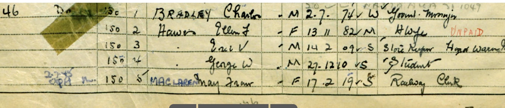
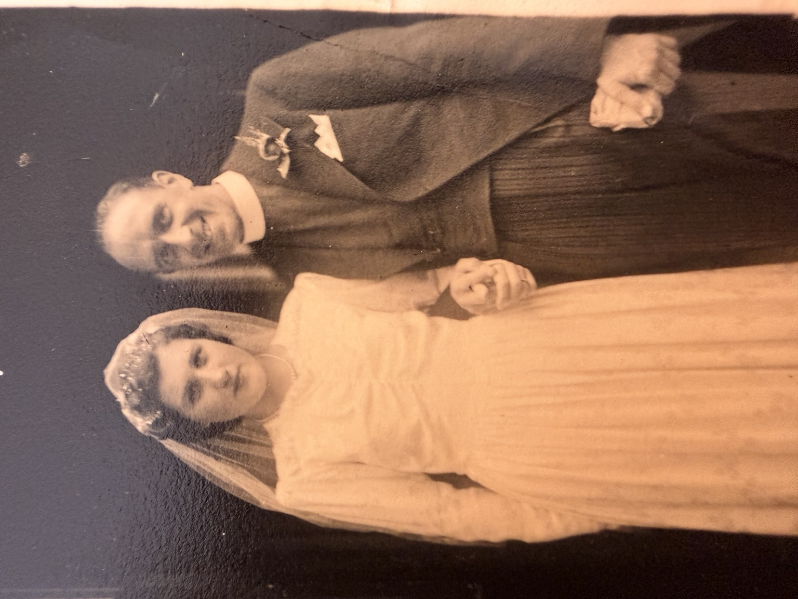
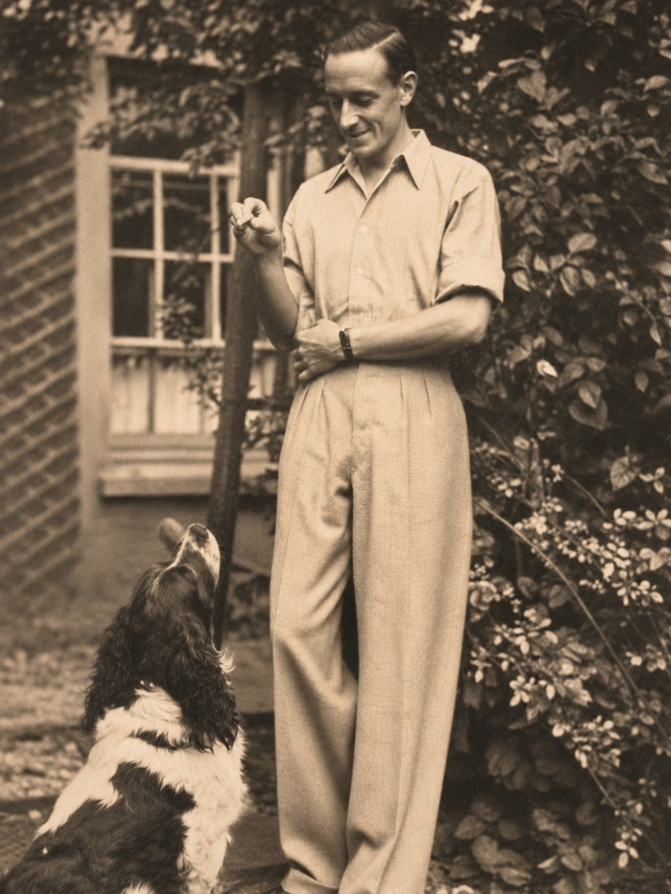
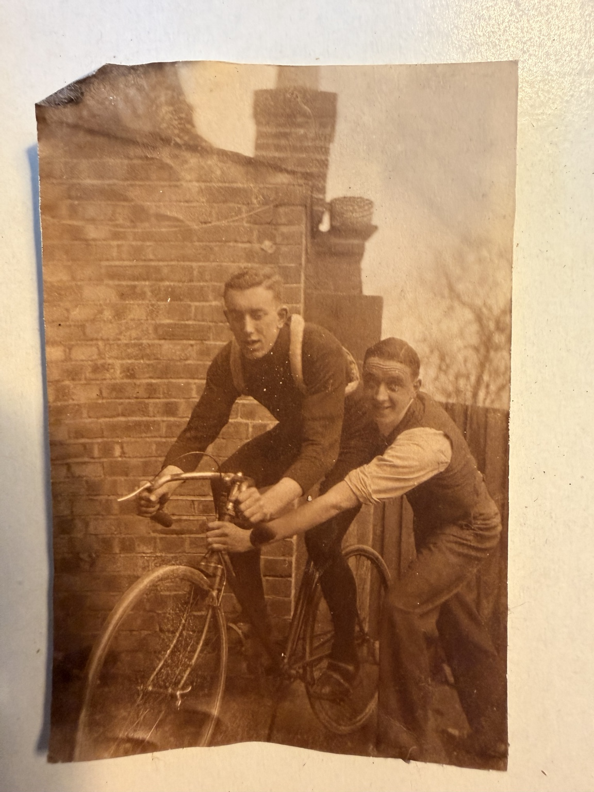
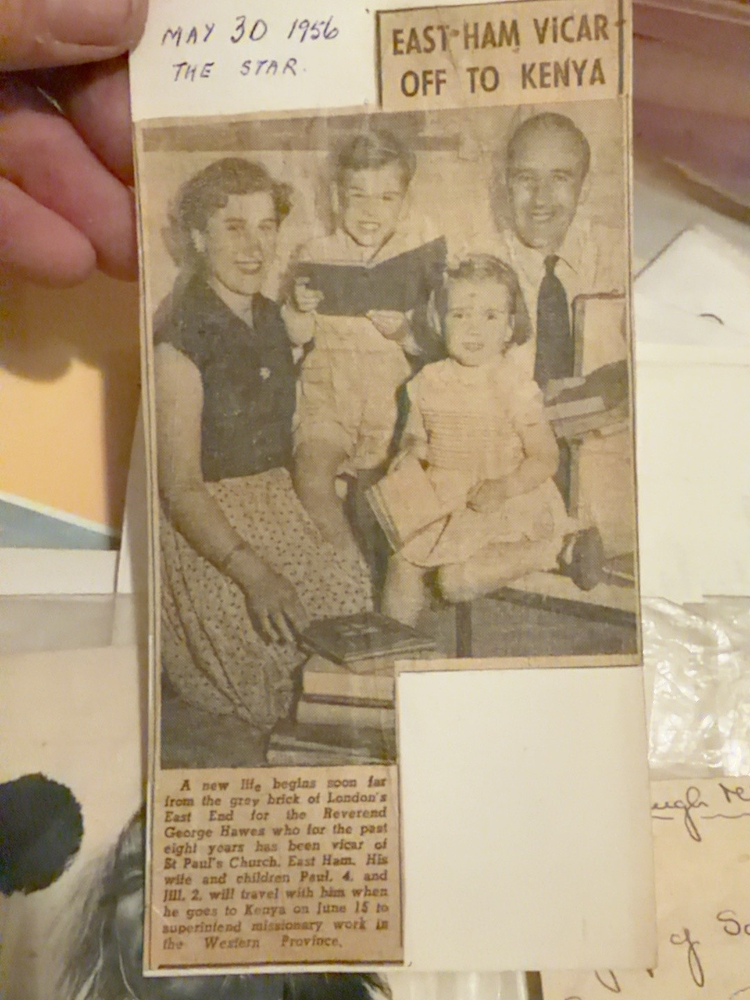

Biography
George W. Hawes served as vicar of St Paul's, East Ham, and in 1956 prepared to travel to Kenya to supervise missionary work.
1921: 46 Gipsy Hill
Recorded as George Hawes, aged 10 years 6 months, a boarder in Charles S. Bradley’s household, with Walter, Nellie and the four Hawes children. He is recorded in whole-time education, with both parents alive. View the original census and household transcription →
1911 census: Anerley
The supplied household transcript for 125a Croydon Road, Anerley S E, lists George Hawes, aged three months, as a visitor alongside Walter, Frances and Eric. This records their presence on census night, rather than proving their usual residence.
1939 Register: birth date
The George W entry in the supplied 46 Gipsy Hill register extract appears to record birth on 27 December 1910, single marital status and occupation “Student”. A December 1910 birth is compatible with the existing January–March 1911 birth registration. The date is recorded as a reading of the supplied original extract; matching this entry to Rev George W. Hawes rests on its family context.
Family origins
An England and Wales birth index records George W. Hawes in the Camberwell registration district in the first quarter of 1911, with mother's maiden surname Creese (volume 1D, page 751). The family identifies George as a son of Walter Joseph William Hawes and Frances Ellen “Nellie” Creese.
The Kenya appointment in 1956
A family-held newspaper clipping dated 30 May 1956 reports that George had been vicar of St Paul's, East Ham, for eight years and intended to leave on 15 June to supervise missionary work in Kenya's Western Province.
Family photograph
The newspaper cutting includes George, his wife Beryl (identified by family testimony), and their children. The names of his children are withheld here for privacy.
Facts and dates
- Recorded dates
- Born 1911
- Research source
- 1911 birth index; 1956 newspaper cutting; family identification
- Spouse/partner
- Beryl (family identification)
- Birth registration
- Camberwell, January–March 1911
- Mother's maiden surname
- Creese
- Role in 1956
- Vicar, St Paul's, East Ham
- 1956 destination
- Kenya, Western Province
27 December 1910 – March 2004
Family records
Dates and events recorded in the family records. Month-only dates may be registration periods. Where sources disagree, the differences are noted below.
Research note: The family records give birth on 27 December 1910; the existing civil index records registration in January–March 1911. A birth late in December and registration the following quarter are compatible. The exact birth date remains a entry in the family records.
- Birth
- 27 Dec 1910
Source: England & Wales, Civil Registration Death Index, 1916-2007 — General Register Office; United Kingdom Record ↗ - Residence
- 1939 · London, England
Source: 1939 England and Wales Register — The National Archives; Kew, London, England; 1939 Register; Reference: Rg 101/372d Record ↗ - Death
- Mar 2004 · Portsmouth, Hampshire, England
Source: England & Wales, Civil Registration Death Index, 1916-2007 — General Register Office; United Kingdom Record ↗
Name in family records: George Walter Hawes.
Documents & photographs

Identified by Antony Greenfield as George Walter Hawes. Original supplied photograph, displayed without restoration. Date and photographer unconfirmed.
View original photograph →
Birth dates, occupations and marital status in an original register extract.
View register and transcription →
Intact original wedding portrait, supplied sideways; no other changes.
View photograph and notes →
Original photograph and cleaned viewing copy.
View photograph and notes →
Two original photographs: the brothers together and Eric posing with his bicycle.
View photographs and notes →
Newspaper clipping dated 30 May 1956
Open record →References and research
Original evidence is distinguished from information in family records and family recollections. Personal details of living descendants are withheld.